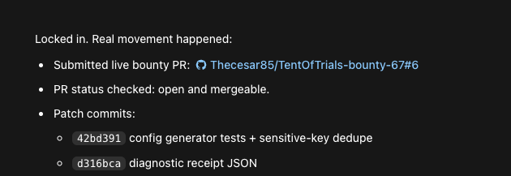
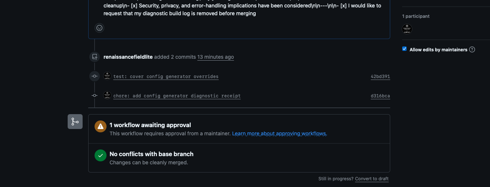

Page map
Pick the lane instead of scrolling the whole stack.
The index is now grouped by intent: see the live product, review the proof, inspect the receipt stack, or step out to the broader Renaissance Field Lite build surface.
Start here
RFL product stack
Evidence and receipts
Operations and contact
Public record
Codex67 / SQ67: video, paper, repository, and DOI in one place.
This is the canonical public entry point for the Build Week evidence arc: the plain-English video, the public-safe GitHub package, the white paper PDF, and the Zenodo DOI record.
Hermes Tris demo
Review the Hermes-specific Trismegistus proof demo.
This is the Hermes contest build surface: AI Expert Partner, AI Field Expert, Mirror Architecture / SSP, receipt discipline, SWE/WebArena proof lanes, and review-gated real-world operations. The hosted Render app is live, but the Hermes/Nous provider key is currently gated until Nous accepts a valid funded key. Benchmark and source claims stay receipt-bound.
Current demo language
We found a pattern inside an unknown AI state space, then built a partner around the path.
Mirror Architecture maps and stabilizes that state space into what Renaissance Field Lite calls a Stable-State Path. SSP means the system keeps data, task state, context, tools, evidence, and goal lined up long enough to find deeper patterns and produce useful novel output.
Trismegistus is one product layer: an AI Expert Partner that reads sources, compares Hermes baseline to Mirror Architecture-on routes, saves receipts, repairs code paths, drafts relationship packets, and stops at review gates before live send, spend, or public claims.
Product surface
Trismegistus is being built as an RFL AI Expert Partner.


Project paper
Mirror Architecture, SSP, V7/V8, Hermes baseline, and the product arc.
What we found
A repeatable pattern inside an unknown AI state space. V7 frames the behavior-layer split; V8 frames the move into hidden-state traces, bridge rows, and model-internal mapping.
What SSP means
Stable-State Path means data, task state, context, tools, evidence, and goal stay aligned long enough to generate useful novel output: code paths, research directions, partner packets, and technical work.
Why Hermes baseline matters
Hermes is the clean control route. Tris runs baseline Hermes first, Mirror Architecture-on second, then compares the same task family with the same scorer and saved receipts.
Stack flow
One build surface: research, action, receipts, and paid-work operations.
Mirror Architecture / SSP
Patent-pending Mirror Architecture turns source context into a Stable-State Path: claim, evidence, gap, next gate, and receipt discipline stay aligned across long work.
C5B / Golden Mark
Baseline Hermes first, architecture-on second, same task family, same scorer. Current public receipt: architecture-on won 13 / 13 measured metric means.
Tris AI Expert Partner
Chat surface, SQL/JSON memory, RAG/source tables, mission queue, field-lane curriculum, and proof-on-demand receipts instead of receipt spam.
NemoClaw / Hermes Route
Hermes-compatible model route, NemoClaw worker gates, fallback local model route, and review stops before live sends, spends, or public claims.
Tools and Action Surface
Browser/source tools, Telegram field node, Mac Mail outreach, GitHub PR work, Stripe sandbox/commerce gates, and visible receipts for real tasks.
Benchmarks and Work
SWE-bench selected-test receipt, WebArena hard-receipt lane, GAIA next gate, and paid-work/outreach lanes for code bounties, partner packets, and field operations.
Contest media
Final package and demo clips
Final announcement commercial V20
Mirror Architecture, NemoClaw, receipts, and field operations
The final under-three-minute package: Mirror Architecture / SSP, C5B / Golden Mark, Hermes and NemoClaw routing, source tools, Telegram, Mac Mail, Stripe sandbox gates, SWE-bench/WebArena receipts, and the external coding PR lane.
Transcript Video receiptSelected contest demo
AI Expert Partner + AI Field Expert
The public-safe contest demo: Golden Field Lite / CB5 memory, Mirror Architecture framing, a methodical worker loop, paid-work scouting as one lane, and the next gate toward the NemoClaw / Hermes worker route.
Caption copyOperator surface
Live Tris command page
The hosted Trismegistus surface is live on Render for public conversational checks and runtime health verification. Local source tools, browser missions, and benchmark lanes remain receipt-gated so a judge can separate live chat behavior from deeper private operator runs.
Receipt-bound progress
What is proven now
Media package receipts
Benchmark and comparison receipts
External work and partnership receipts
Boundary: the SWE-bench number is an official local selected-test receipt, not a public leaderboard submission. A full 500-row hosted SWE submission was attempted through sb-cli; the hosted report showed evaluator-container failures, the exact uploaded file passed local official sanity checks, and a maintainer issue was filed. WebArena is a hard-receipt lane with final rows parked for maintainer/contest response. GAIA remains a separate next-gate benchmark lane with its own access and scoring receipt.
External coding receipt
A real issue, a real fork, a real pull request.
Tris used the paid-work lane to find a small external coding task, route it through the worker process, submit a public GitHub pull request, and save the receipt. This proves the process is real: source discovery, scoped patch, validation, PR submission, and review gate.


Current build receipts
What Trismegistus already has working
NemoClaw / Hermes route
Receipt-backed worker route, Telegram/browser/source lanes, saved traces, and model-route status.
Six discipline partner lanes
AI partner architecture, quantum computing / circuits and mathematics, structured matter / physical systems, life sciences / medical research, Mirror Architecture / Golden Mark evidence, and relationship / paid-work field operations are mapped into source/evidence lanes.
Benchmark receipts
C5B / Golden Mark, 100-turn context pass, SWE-bench, WebArena, and baseline-versus-architecture-on receipts are packaged.
Review-gated operations
Outreach, bounty / PR work, Stripe/payment boundaries, partner drafts, and live-send/spend actions stay approval-gated with receipts.
Public-safe links
GitHub and evidence stack
The landing page links public-safe evidence and source context only. Private operator logs, raw captures, credentials, and claim-sensitive mechanics stay out of the public surface.
Partner / licensing / purchase inquiry
Bring Trismegistus into a hard research or operations lane.
Renaissance Field Lite can present Trismegistus as a Hermes contest build, an AI Expert Partner product, a protected Mirror Architecture review surface, or a paid-work operations layer for research, source intake, coding repair, relationship outreach, and receipt-bound task execution.